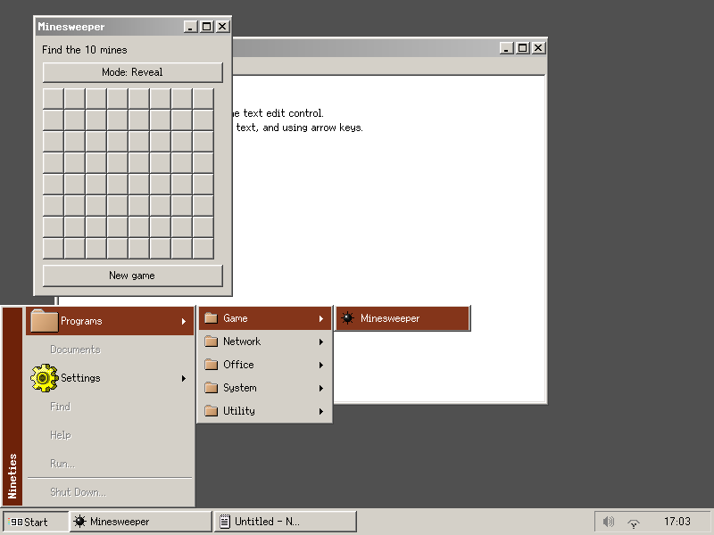
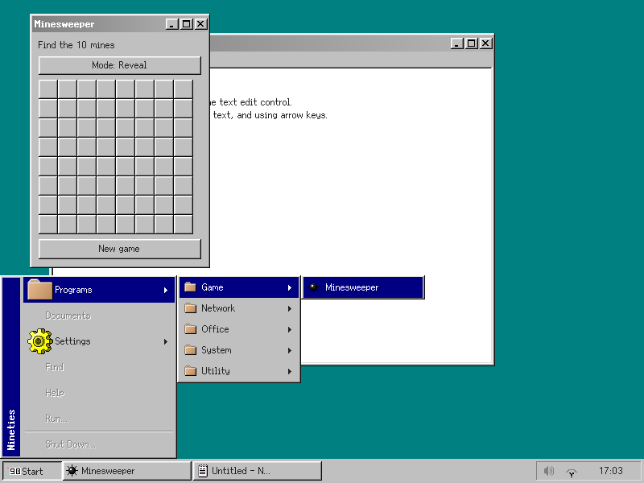

Nineties
A little of the nineties. A desktop for today.
Nineties brings the taskbar, Start menu, bevelled buttons and pixel-styled windows of 90s desktops to Linux. It runs on Wayland and a modern Linux kernel: a real desktop, not an emulator or a picture of an old one.

Familiar, not frozen in time
I wanted the feel of the desktops I grew up with, without giving up a modern Linux system. Nineties includes its own Rust GUI toolkit, Wayland compositor and desktop shell. Notepad and Minesweeper are applications built with that same toolkit; the Start menu also picks up your installed applications.
There are two looks: the default Serenity palette and icons, and Chicago’s teal desktop and navy title bars. The widgets keep their familiar 90s shapes. Nineties does not ship Microsoft artwork. The SerenityOS icons are used under their BSD licence; see the third-party notices.

Download a little time machine
Get the nightly VM image and checksum. It is a compressed x86_64 qcow2 image that boots into Nineties; a virtual machine with KVM is recommended.
This is an early experiment, not a replacement for your daily desktop. Window, input and application compatibility still have rough edges, and the Control Panel is not yet functional. Expect things to change or break.
Nineties is not open source. It is a personal, mostly agent-developed experiment, with no concrete plans to publish the source.
A small club for people who miss this feeling
What I love about communities like PICO-8’s is the sense of a small place where people make things, share them and cheer each other on. That is the spirit I would like to grow around Nineties: not just downloads, but people with favourite workflows, tiny desktop ideas and things to show each other.
Try a build. Send a screenshot of your setup, tell me which little detail made you smile, or what got in your way. Supporting the project can start with feedback, testing and showing it to someone who would enjoy it.
Say hello and share what you tried. There is no membership or payment required, and no forum yet: let’s start with a conversation.